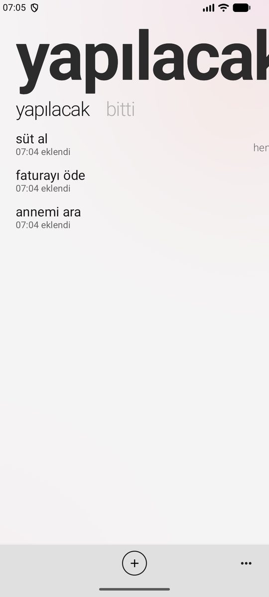
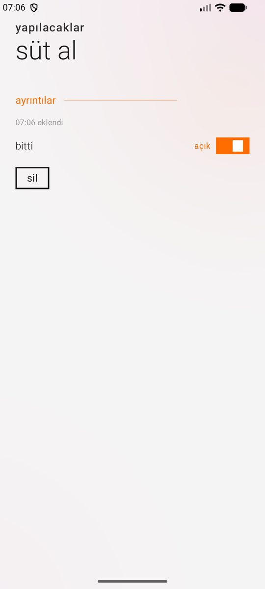
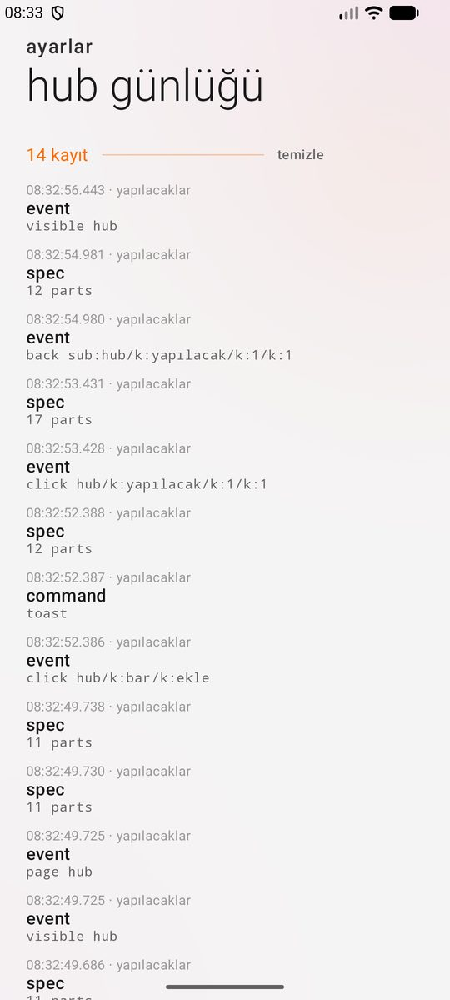
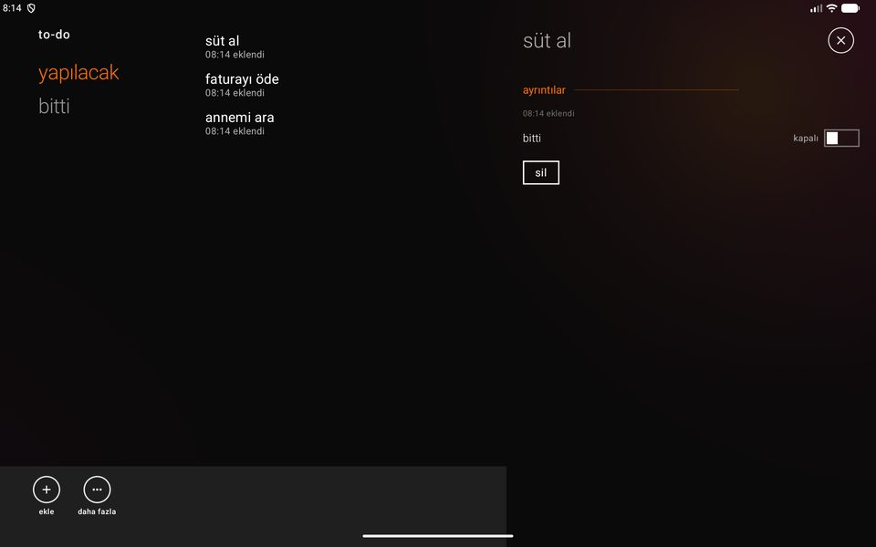
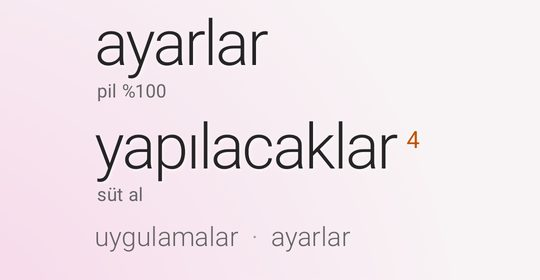
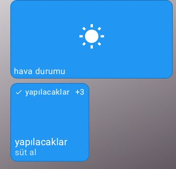
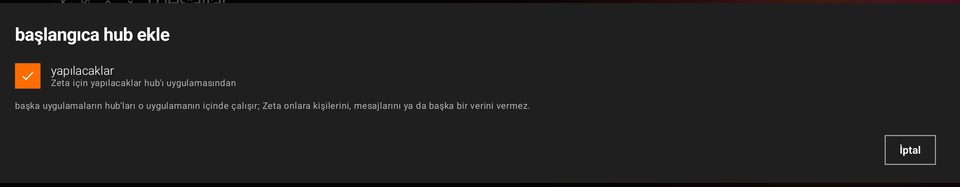

ZetaHubKit
Zeta için hub yaz. Uygulaman hub'ı tarif eder, Zeta onu çizer.



Kısaca
Zeta bir başlatıcıdan çok bir arayüz paketi; ZetaHubKit onu başkalarının da hub ekleyebildiği bir platform yapıyor. Hub'ın normal bir Android uygulamasında yaşar. O uygulama Zeta'ya ekranı değil tarifini verir: sayfaları, listeleri, düğmeleri, alt çubuğu, canlı karosu. Zeta bu tarifi kendi parçalarıyla çizer:
- telefonda kaydırılan sayfalar,
- tablette solda başlıklar, yanda bölme,
- Aura'da listeden uçan büyük başlık,
- Mozaik'te bir karo.

Böylece hub, Zeta'nın kendi hub'larından ayırt edilmez, ve sen dört ayrı düzen yazmazsın. Dokunuşlar senin uygulamana geri gelir; kodun her zaman kendi uygulamanda, kendi izinleriyle çalışır.
ZetaHubKit Apache 2.0 lisanslıdır; ücretsiz ya da ücretli, açık ya da kapalı kaynak hub yazabilirsin. Dış hub'lar Zeta'nın ücretsiz sürümünde de çalışır.
1. Projeye ekle
dependencies {
implementation("io.github.serkantkn:zetahubkit:0.1.0")
}İlk sürüm Maven Central'a hazırlanıyor. O zamana kadar
depoyu klonlayıp
./gradlew :hubkit:publishToMavenLocal çalıştır ve projene mavenLocal() ekle.
En az Android 9 (API 28) gerekir; Kotlin 2.0 ve üstüyle çalışır.
2. Manifeste servisi ekle
<service
android:name=".TodoHub"
android:exported="true"
android:icon="@drawable/ic_todo"
android:label="@string/hub_name">
<intent-filter>
<action android:name="com.serkantkn.zeta.action.HUB" />
</intent-filter>
<meta-data android:name="com.serkantkn.zeta.hub.protocol" android:value="1" />
</service>android:labelhub'ın adıdır: küçük harfle, kısa ("yapılacaklar", "kargolarım").android:icontek renkli tek bir şekil olsun; karonun mürekkebiyle boyanır. Vermezsen adın ilk harfi kullanılır.- Uygulamanın başka bir ekranı olması gerekmez.
3. Hub'ı tarif et
class TodoHub : ZetaHubService() {
private var tasks by mutableHubStateOf(listOf(Task(1, "süt al"))) // değişince hub yeniden tarif edilir
override fun hub(): HubSpec = zetaHub {
page(getString(R.string.page_open)) {
val open = tasks.filter { !it.done }
if (open.isEmpty()) empty(getString(R.string.nothing_to_do))
list(open, key = { it.id }) { task ->
item(task.title, subtitle = task.note, opens = { taskPage(task.id) })
}
}
page(getString(R.string.page_done)) { /* … */ }
bar {
action(getString(R.string.add), HubIcon.ADD) { add() }
menu(getString(R.string.clear_done)) { tasks = tasks.filterNot { it.done } }
}
liveTile {
count = tasks.count { !it.done }
line = tasks.firstOrNull { !it.done }?.title
}
}
private fun taskPage(id: Int) = subPage(title = find(id).title, key = "task$id") {
section(getString(R.string.details))
switch(getString(R.string.done), checked = find(id).done) { checked -> setDone(id, checked) }
button(getString(R.string.delete)) { delete(id); closeSubPage() }
}
}hub() her olaydan sonra, mutableHubStateOf ile tuttuğun bir değer değişince ve
invalidate() çağırınca yeniden çalışır; ZetaHubKit yeni tarifi Zeta'ya gönderir. Çalışan örneğin
tamamı depoda: hubkit/sample.
4. Öğeler
| Öğe | Ne işe yarar |
|---|---|
page(heading) { } | Bir başlığın sayfası. Telefonda kaydırılır, tablette solda listelenir. |
item(title, subtitle, meta, image, count, opens, onLongClick, onClick) | Liste satırı. opens bir alt sayfa açar; Aura'da satırın başlığı o sayfanın başlığı olur. |
list(items, key) { } | Değişen bir liste; key her satırın yerini korur. |
section(title, actionLabel) { } | Bölüm başlığı, sonunda isteğe bağlı bir bağlantı. |
text(text, style) | Metin: TITLE, BODY ya da CAPTION. |
button(label) { } | Düğme. |
switch(title, checked, subtitle) { } | Anahtar. |
value(title, value) { } | Bir ayar ve değeri. |
empty(message, actionLabel) { } | Boş sayfa. |
notice(message, actionLabel) { } | Kendi satırında bir uyarı. |
loading() | Yükleniyor noktaları. |
bar { action(label, icon) { }; menu(label) { } } | Alt çubuk: en çok dört simgeli komut, sınırsız menü. |
takeover { } | Sayfaların yerine tek bir ekran (giriş yap, izin ver gibi). |
subPage(title, key) { } | Hub'ın üstünde açılan sayfa; telefonda kayarak gelir, tablette bölmede durur. |
liveTile { count; line; title } | Karonun ve Aura satırının söyledikleri. |
Servisin içinden: openSubPage(page), closeSubPage(), toast(text),
openUrl(url) (yalnız https, Zeta'nın internet hub'ında), share(text), closeHub().
Resimler content:// (ZetaHubKit, Zeta'ya okuma iznini kendisi verir) ya da https:// olur.
Bir öğeye ihtiyacın varsa (harita, grafik, oynatıcı…) bir issue aç. Öğeler ihtiyaca göre eklenir; eski hub'lar her zaman çalışmaya devam eder.
5. Canlı karo


Hub açıkken liveTile { } yeter. Hub kapalıyken bir şey değişirse (bir iş, bir bildirim, bir alarm):
// servisin içinden: tarifteki liveTile'ı gönderir
publishTile()
// ya da herhangi bir yerden
ZetaTiles.update(context, TodoHub::class.java) {
count = 3
line = "süt al"
}Zeta bunu yalnızca kullanıcının eklediği bir hub için, yalnızca o hub'ın uygulamasından ve dakikada en çok dört kez kabul eder.
6. Dil
Zeta'nın dili telefonunkinden farklı olabilir. Zeta bağlıyken servisin kaynakları Zeta'nın dilindedir:
getString hub'ın metinlerini doğru dilde verir. Tarih ve sayıları hubLocale ile biçimlendir.
7. Dene
- Telefona Zeta'yı (buradan) ve hub uygulamanı kur.
- Zeta'da ayarlar › hub › diğer uygulamaların hub'ları bölümünde hub'ını aç; ya da Aura listesine uzun basıp hub ekle'yi kullan.
- Aynı yerde geliştirici modunu aç. Hub günlüğü:
- bağlantıları, gelen her tarifi (kaç parça olduğuyla), dokunuşları ve komutları gösterir;
- tariflerdeki hataları ve uyarıları kırmızıyla işaretler.

Tarifini kendi testinde de denetleyebilirsin (Robolectric ile):
@RunWith(RobolectricTestRunner::class)
class TodoHubTest {
@Test fun describesItselfCleanly() {
val hub = Robolectric.buildService(TodoHub::class.java).create().get()
assertEquals(emptyList<Any>(), hub.validate())
}
}8. Kurallar ve güvenlik
- Kod Zeta'ya girmez. Zeta yalnızca tarifi okur; tarifte çalışan hiçbir şey yoktur. Hub'ın kodu kendi uygulamasında çalışır.
- Kullanıcı onaylamadan hub eklenmez. Onay uygulamanın imzasına bağlıdır; başka bir imzayla gelen sürüm açılmaz.
- Veri tek yönlü akar. Zeta hub'a kişileri, mesajları ya da başka bir veriyi vermez. Neye ihtiyacın varsa izni kendi uygulamanda iste.
- Hub yalnızca Zeta ile konuşur. Yayın sürümü (debuggable olmayan) yalnızca imzalı Zeta'ya yanıt verir; geliştirirken (debuggable) her Zeta yapısına yanıt verir.
- Sınırlar:
- bir tarif en çok 4000 parça olabilir;
- uygulama ilk tarifini 5 saniye içinde vermelidir;
- kapalıyken karo dakikada en çok 4 kez yazılabilir.
- İlk sürümde dış hub'lar televizyonda sunulmaz.
Kaynak ve lisans
ZetaHubKit'in kaynağı ve örneği depoda: hubkit/. ZetaHubKit Apache Lisansı 2.0 ile yayınlanır; Zeta'nın kendisi kapalı kaynaktır.